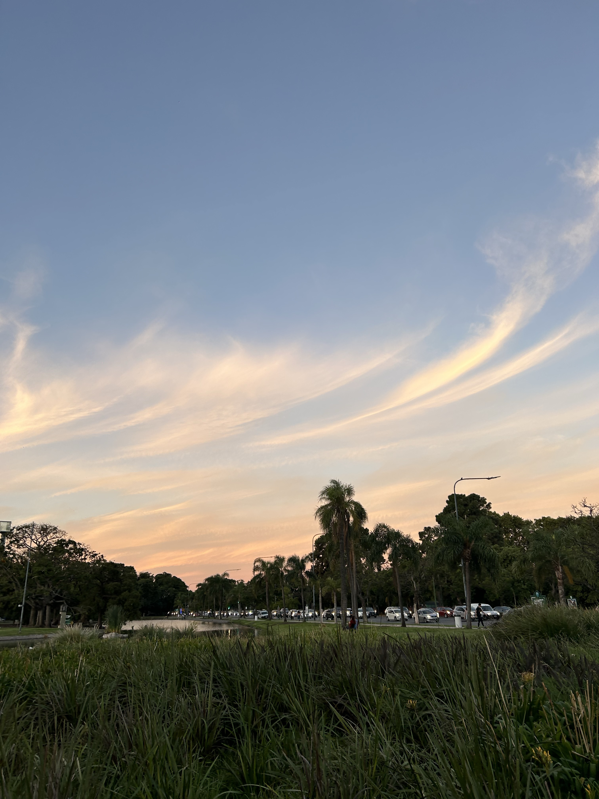
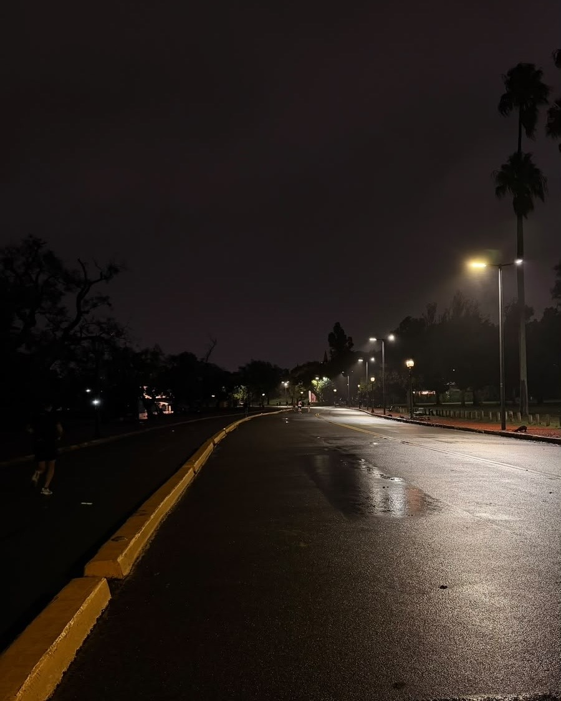

El Rosedal
Ubicado dentro de los Bosques de Palermo, el Rosedal es uno de los puntos más elegidos por runners de la Ciudad de Buenos Aires. Gracias a sus amplios senderos, entorno verde y circuito plano, se ha convertido en un lugar ideal tanto para entrenamientos recreativos como para trabajos de fondo. Una vuelta completa al circuito principal del Rosedal ronda los 1,6 km, aunque puede combinarse fácilmente con los distintos caminos de los Bosques de Palermo para sumar muchos más kilómetros según el entrenamiento.
Distancia aproximada: Desde 1,6KM por vuelta, con posibilidad de extender el recorrido y acumular mas de 10KM.
Mejor horario: Durante la mañana el circuito suele ser mas tranquilo, mientras que por la tarde registra una mayor concurrencia de corredores, ciclistas y visitantes.

